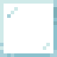
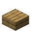

Reference: pages
Reference
Terminal Desk
encodedlogistics:terminal_desk · Block · Stacks to 64 · Creative tab: Encoded Logistics
A green-screen terminal on a desk, two blocks wide: it opens the Terminal OS, where you work with the network's items, jobs and devices and run ELCL commands. Its drawer (the right half) takes withdrawals. Uses one lane.
Terminal Desk
Shift: A green-screen terminal on a desk: the network's items, jobs and devices in text mode, and a command line. Its drawer takes withdrawals.
Works with
On a network
It counts as a device of type DESK in Work with Devices and in ELCL; the first one on a network is named ELDESK01. See Device types.
How to get it


encodedlogistics:terminal_desk
Used to make
As a block
| Hardness | 2.5 |
|---|---|
| Blast resistance | 6 |
| Tool | any pickaxe (needed for it to drop) |
| Light level | 0 in its default state |
Where it's documented
- Terminal Desk and Swivel Chair (Terminals and access)
- Terminal OS and ELCL (Terminal OS and ELCL)
- Terminals and access (Terminals and access)
- Progression (Getting started)
- Jobs, scheduling and triggers (Terminal OS and ELCL)
- The Midrange line (Crafting and automation)
- Encoded Logistics (Home)